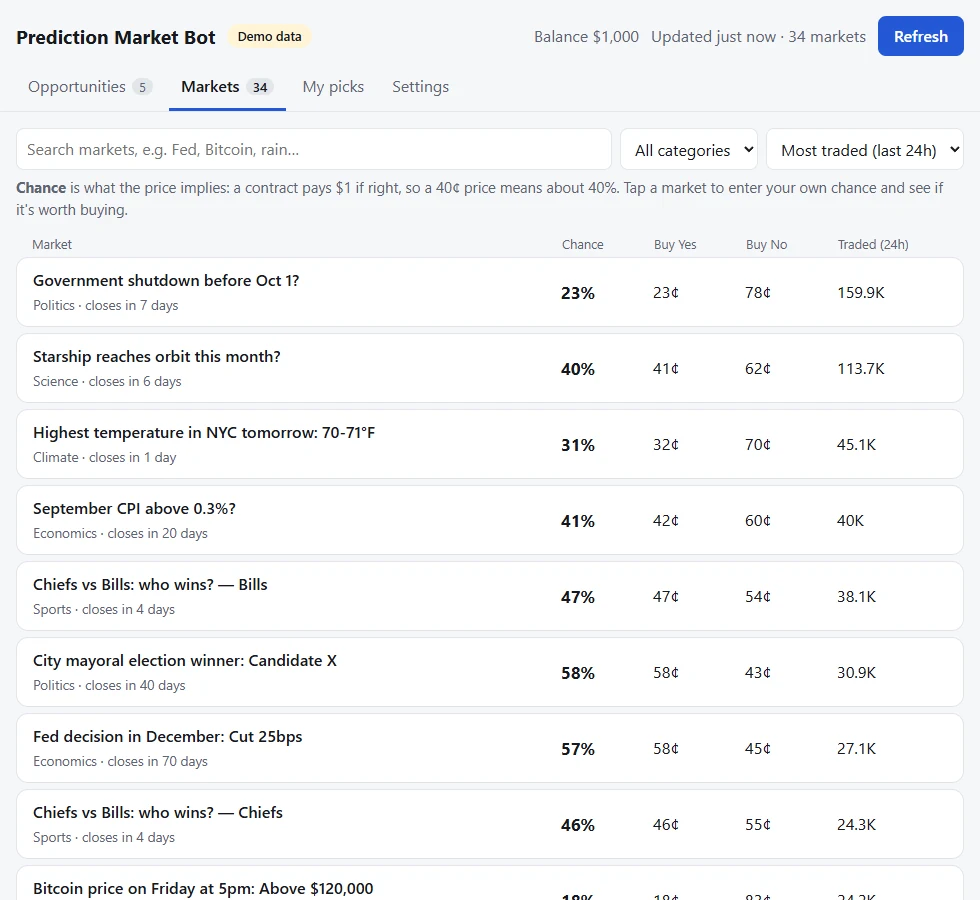

Prediction Market Bot
A scanner that reads every open Kalshi market every five minutes and emails me when one is worth a look.
- Role
- Built on Jonathan Becker's open-source prediction-market-analysis framework, which provides the data indexers and analyses. I added the Kalshi scanner, the alerts, the web app and the tests.
- Stack
- Python, Kalshi REST API, RSA key auth, pytest, ruff, GitHub Actions


The local web app on demo data (--demo).
The problem
Kalshi prices move every few minutes across thousands of markets. I wanted to know when one was worth a look without watching them all.
Why it asks for your own estimate
The first version compared a market's fair price, worked out from its own bids, with the same market's asks. That number is always zero or negative, so it could never find anything: a market cannot tell you it is mispriced.
The scanner now needs an outside view: either your own probability for an outcome, or a guaranteed-payout comparison across outcomes where only one can happen.
What it shows
- Picks with an edge. Markets where the price beats the chance you gave them, after Kalshi's fees.
- Arbitrage. Groups of outcomes where only one can happen, priced so buying NO on every one costs less than the set is sure to pay back. They cannot lose at the listed prices, but they are rare.
- Unusual activity. Very one-sided buying or very large trades in the busiest markets.
- Markets. Search every open market, enter your own chance, and see the expected profit for YES or NO with a suggested stake.
- Alerts. A headless scanner runs the same scan on a timer, logs what it finds, and sends email.
- Trading, off by default. Paper mode records what it would have bought at real prices. Live mode also needs an explicit setting in the environment file, and risks 1% of the balance per trade under a daily cap.
Try it
Demo mode uses made-up data, so it needs no internet connection or Kalshi account. Tests and lint run in CI on every push.
uv sync
uv run app.py --demo --open